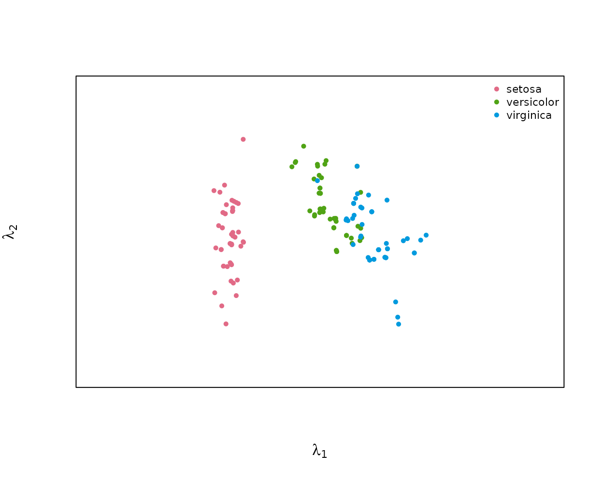
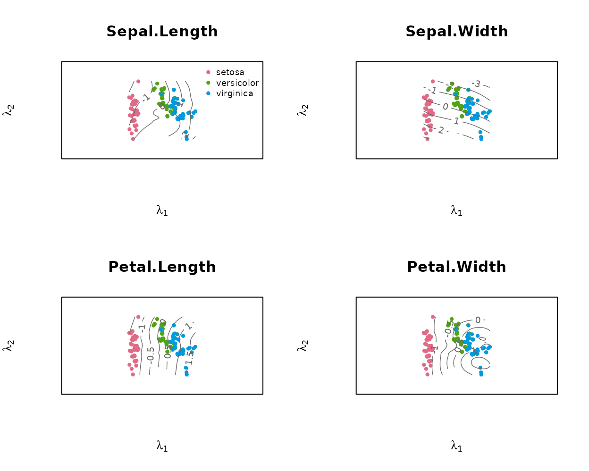
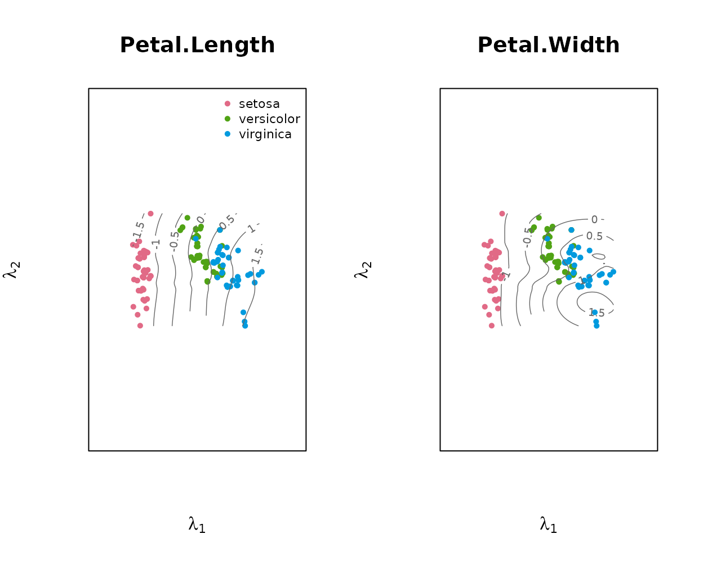
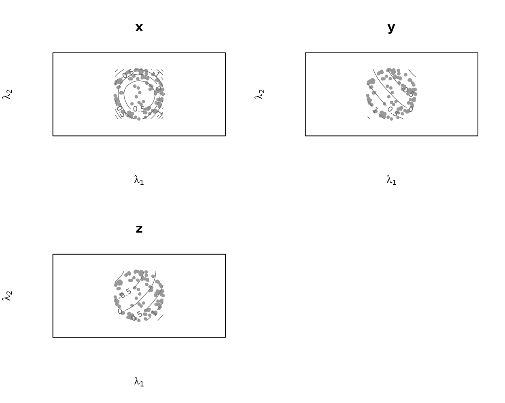
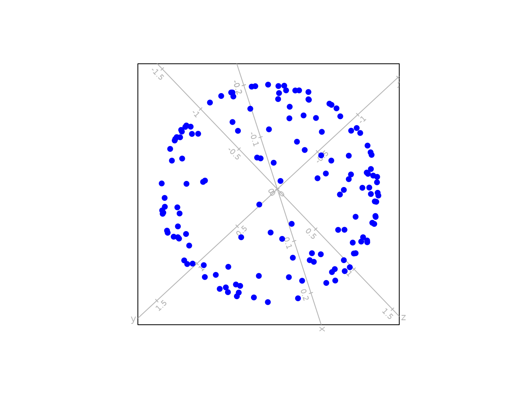

Principal-surface contour biplots
Raeesa Ganey
2026-09-09
Source:vignettes/prinsurf.Rmd
prinsurf.RmdWhat this package does
A principal surface (Hastie & Stuetzle, 1989) is
a smooth curved two-dimensional manifold fitted through a data set,
generalising the first two principal components to nonlinear structure.
prinsurf fits such a surface and displays it as a biplot:
the samples are plotted at their surface coordinates
,
and each variable is shown as the contour lines of its fitted coordinate
function $\widehat{f\mkern-2mu}_j(\boldsymbol\lambda)$
over that plane. A variable’s value for a sample is read off by locating
the sample among the contour lines, the direct nonlinear generalisation
of reading a straight biplot axis.
Fitting a surface and drawing the biplot
library(prinsurf)
fit <- prinsurf(iris[, 1:4], scale = TRUE) # standardise heterogeneous units
fit
#> Principal surface fit: 150 samples, 4 variables
#> loess span 0.60, converged in 10 iterations
#> variables: Sepal.Length, Sepal.Width, Petal.Length, Petal.WidthWith no vars argument, plot() draws a bare
scatter of the sample coordinates:
plot(fit, group = iris$Species)
Passing vars adds one panel per named variable, each
with that variable’s contour lines over the sample coordinates:

Any subset can be requested:

Reading the variables: predict() and its error
predict() reads every variable’s value for each sample
off that variable’s contour lines at the sample’s biplot position
,
the same interpolation used to draw the contours above and returns an
matrix on the variables’ original scales. Values come from the contour
grid alone; a sample whose position is not covered by the supported part
of the grid has no contours to read and is returned as
NA.
phat <- predict(fit)
head(round(phat, 2))
#> Sepal.Length Sepal.Width Petal.Length Petal.Width
#> [1,] 5.04 3.50 1.51 0.28
#> [2,] 4.81 3.03 1.60 0.26
#> [3,] 4.70 3.20 1.42 0.19
#> [4,] 4.65 3.10 1.42 0.19
#> [5,] 4.88 3.62 1.43 0.23
#> [6,] 5.46 3.91 1.61 0.34
head(iris[, 1:4])
#> Sepal.Length Sepal.Width Petal.Length Petal.Width
#> 1 5.1 3.5 1.4 0.2
#> 2 4.9 3.0 1.4 0.2
#> 3 4.7 3.2 1.3 0.2
#> 4 4.6 3.1 1.5 0.2
#> 5 5.0 3.6 1.4 0.2
#> 6 5.4 3.9 1.7 0.4Note that predict() and fitted() answer
different questions. fitted() gives $\widehat{f\mkern-2mu}(\boldsymbol\lambda_i)$
exactly, in the centred/scaled units used for fitting – the surface’s
own reconstruction of each sample. predict() gives what a
reader interpolating between the printed contour lines would obtain, on
the original measurement scales.
contour_predictive_error() measures this reading against
the samples’ actual values, per variable, as a root-mean-square error in
the working (centred/scaled) units:
contour_predictive_error(fit)
#> Sepal.Length Sepal.Width Petal.Length Petal.Width
#> 0.1932339 0.1305817 0.1239186 0.2063036
#> attr(,"overall")
#> [1] 0.1635094
#> attr(,"n.unread")
#> [1] 0Diagnostics: sample predictivity
Two diagnostics look at surface fit from different angles:
contour_predictive_error() above measures reading one
variable at a time from its contours, while sample
predictivity asks how well the surface reconstructs each
whole sample, $\widehat{\boldsymbol
x\mkern-3mu}_i = \widehat{f\mkern-2mu}(\boldsymbol\lambda_i)$, as
the proportion of the sample’s squared length that the fit recovers,
$1 - \lVert \boldsymbol x_i -
\widehat{f\mkern-2mu}(\boldsymbol\lambda_i) \rVert^2 / \lVert
\boldsymbol x_i \rVert^2$. It is read from the sample’s
position on the surface and is the principal-surface analogue
of biplot sample predictivity.
pred <- predictivity(fit)
summary(pred)
#> Min. 1st Qu. Median Mean 3rd Qu. Max.
#> 0.5423 0.9193 0.9792 0.9377 0.9947 0.9998
attr(pred, "overall")
#> [1] 0.9377464
## PCA biplot (rank-2) sample predictivity on the same standardised data, for comparison
Z <- scale(as.matrix(iris[, 1:4]))
V2 <- svd(Z)$v[, 1:2]; Zhat <- Z %*% V2 %*% t(V2)
pca <- mean(1 - rowSums((Z - Zhat)^2) / rowSums(Z^2))
c(principal_surface = round(attr(pred, "overall"), 3), pca_biplot = round(pca, 3))
#> principal_surface pca_biplot
#> 0.938 0.918Here the curved surface reconstructs the samples better than the flat PCA biplot, because it captures nonlinear structure that a plane cannot.
Contour biplot versus a PCA biplot
A PCA biplot represents every variable by a single straight axis, so
it can only show structure that is linear in the two leading principal
components. The upper cap of a sphere makes the contrast with a contour
biplot concrete: its height coordinate x has an interior
maximum over the fitted surface (closed, concentric contours), while
y and z vary monotonically.
## upper cap of a sphere: x = height, y, z = horizontals
n <- 200; u <- 2 * runif(n) - 1; th <- 2 * pi * runif(n) - pi
S <- cbind(x = u, y = sin(th) * sqrt(1 - u^2), z = cos(th) * sqrt(1 - u^2))
S <- S[S[, "x"] > -0.4, ] # keep the cap
S <- sweep(S, 2, colMeans(S)) # centre
sph <- prinsurf(S, max.iter = 8)
plot(sph, vars = colnames(S))
x’s closed contours are visible directly; y
and z show open, roughly parallel contours. A PCA biplot of
the same data, drawn with biplotEZ, shows
what a flat, straight-axis representation does with the same
structure:

The samples form a hollow ring: the two leading principal components
recover only y and z, and x
almost orthogonal to that plane collapses to near-zero variation across
it. Every sample near the middle of the height range sits close to the
same spot regardless of its actual x, because a straight
axis for x cannot express its interior maximum. The contour
biplot’s curved surface follows that maximum instead of flattening it
away.
Sample predictivity makes the same point numerically, and unlike the near-planar iris data above the gap here is large: